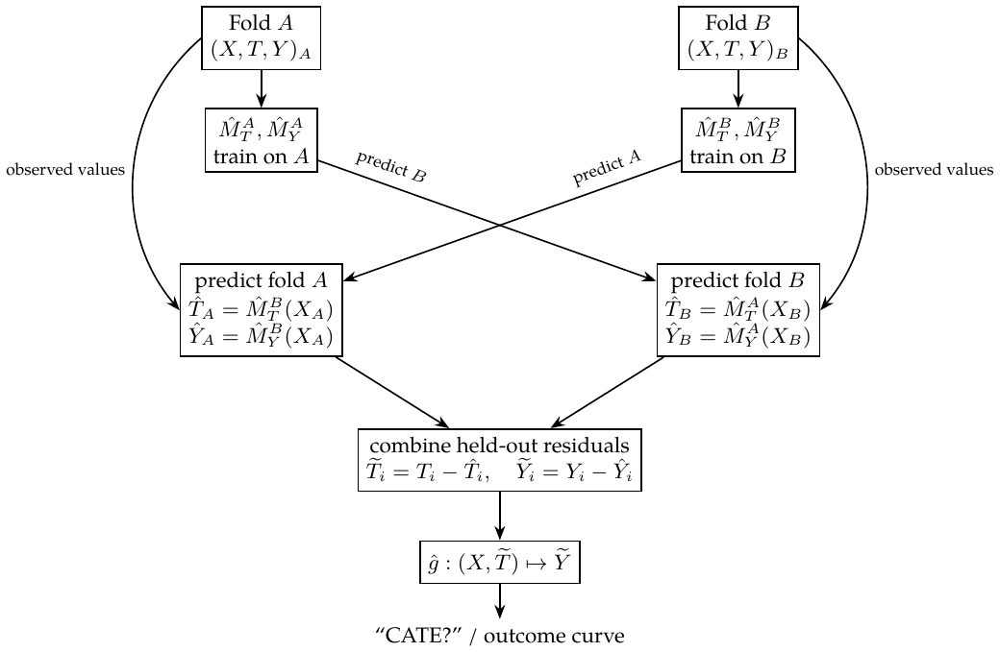

Chapter 22. Debiased / orthogonal machine learning
The reference is “Double Machine Learning for Treatment and Causal Parameters” (2016). ML estimates nuisance functions. For sales, the treatment price and features such as temperature, cost and weekday may have complex relationships; confounding makes a naive price regression unreliable.
Frisch–Waugh–Lovell.
For \(\hat Y=X_1\hat\beta_1+X_2\hat\beta_2\), where \(X_1,X_2\) are feature matrices (one feature per column, one observation per row) and \(\hat\beta_1,\hat\beta_2\) are column coefficient vectors, the same coefficient on \(X_1\) is obtained by:
Regressing \(Y\) on \(X_2\), giving \(\hat Y^*=P_{X_2}Y\).
Regressing \(X_1\) on \(X_2\), giving \(\hat X_1=P_{X_2}X_1\).
Taking \(\widetilde X_1=X_1-\hat X_1\) and \(\widetilde Y=Y-\hat Y^*\).
Regressing \(\widetilde Y\) on \(\widetilde X_1\) to recover \(\hat\beta_1\).
Thus \((Y-\widehat{Y\sim X})\sim(T-\widehat{T\sim X})\) estimates \(\tau\) in \[Y_i-E[Y_i\mid X_i]=\tau\{T_i-E[T_i\mid X_i]\}+\varepsilon_i.\]
“FWL on steroids”: ML for ATE.
\[Y_i-\hat M_Y(X_i)=\tau\{T_i-\hat M_T(X_i)\}+\varepsilon_i.\] \(\hat M_Y\) estimates \(E[Y\mid X]\) and acts as a denoising model, explaining variation in \(Y\) due to \(X\). \(\hat M_T\) estimates \(E[T\mid X]\) and acts as a debiasing model, removing treatment-assignment bias associated with \(X\).
Estimate outcome \(Y\) from features \(X\) with flexible ML regression \(M_Y\).
Estimate treatment \(T\) from \(X\) with \(M_T\).
Obtain residuals \(\widetilde Y=Y-M_Y(X)\) and \(\widetilde T=T-M_T(X)\).
Regress outcome residuals on treatment residuals: \(\widetilde Y=\alpha+\tau\widetilde T\).
I think of this as “two predictions, one regression.” In the constant-effect partially linear model \(Y=\tau T+g(X)+\varepsilon\), \(E[\varepsilon\mid T,X]=0\), \(\tau\) is the causal slope (ATE for binary treatment). With heterogeneous binary effects, pooled residual regression instead targets \(E[e(X)(1-e(X))\tau(X)]/E[e(X)(1-e(X))]\).
My overfitting explanation. If \(M_Y\) overfits, it captures more than the \(Y\)–\(X\) relationship: it also absorbs some \(Y\)–\(T\) relationship. The final effect can be biased toward zero because the outcome model has swallowed the causal relationship instead of leaving it for residual regression. If \(M_T\) overfits, it explains too much variation in \(T\), leaving little treatment-residual variance. The final estimate then has high variance. I connect this to an overly extreme fitted propensity. A near-zero fitted residual can be an overfitting symptom; it does not by itself prove that the true propensity violates positivity.
To address overfitting, split the data into \(K\) folds. For each fold, train ML models on the other \(K-1\) folds and obtain residuals on the held-out fold. Combine predictions/residuals for all folds and fit \(\widetilde Y=\alpha+\tau\widetilde T\).
CATE and the R-learner.
Allow the slope to depend on \(X\): \[Y_i-M_Y(X_i)=\tau(X_i)\{T_i-M_T(X_i)\}+\varepsilon_i.\] One final regression is \(\widetilde Y_i=\alpha+\beta_1\widetilde T_i+\beta_2X_i\widetilde T_i+\varepsilon_i\). The final model estimates the sales effect by \(M(\mathrm{Price}=1,X_i)-M(\mathrm{Price}=0,X_i)\). R-learner.
Nonparametric double/debiased ML.
For a continuous relationship, such as price and sales, write \[Y_i=\hat M_Y(X_i)+\tau(X_i)\{T_i-\hat M_T(X_i)\}+\hat\varepsilon_i.\] Rearrange the residual: \[\hat\varepsilon_i=\{Y_i-\hat M_Y(X_i)\}-\tau(X_i)\{T_i-\hat M_T(X_i)\}.\] Minimizing its square gives R-loss. Under the stated identification conditions this estimates binary-treatment CATE, or the conditional slope for a response linear in continuous treatment: \[\begin{aligned} \hat L_n(\tau)&=\frac1n\sum_{i=1}^n\left[\{Y_i-\hat M_Y(X_i)\}-\tau(X_i)\{T_i-\hat M_T(X_i)\}\right]^2\\ &=\frac1n\sum_{i=1}^n(\widetilde Y_i-\tau(X_i)\widetilde T_i)^2\\ &=\frac1n\sum_{i=1}^n\widetilde T_i^2\left(\frac{\widetilde Y_i}{\widetilde T_i}-\tau(X_i)\right)^2. \end{aligned}\]
My interpretation. This is predicting \(\widetilde Y_i/\widetilde T_i\) with any prediction model, using weights \(\widetilde T_i^2\). When a residual is zero, use the undivided squared loss rather than forming the ratio.
What is nonparametric about it? The equation \(\widetilde Y_i=\tau(X_i)\widetilde T_i+e_i\) remains linear in residual treatment, while \(\tau\) can vary flexibly with \(X\). For a genuinely nonlinear treatment response, its conditional R-loss minimizer is \[\tau^*(x)=\frac{\operatorname{Cov}(T,Y\mid X=x)}{\operatorname{Var}(T\mid X=x)}.\] This is a conditional projection slope, not automatically the derivative at a particular treatment value. The distinction motivates the next attempt.
Non-Scientific Double/Debiased ML: unfinished
Unfinished. Following the textbook’s nonlinear construction, I am trying to understand how to obtain counterfactual predictions—“CATE?”—and an entire outcome curve from individual data points. Replace \[\widetilde Y_i=\tau(X_i)\widetilde T_i+e_i\] with a function nonlinear in the treatment residual, \[\widetilde Y_i=g(X_i,\widetilde T_i)+e_i.\] First predict treatment from \(X\) and form its residual; then fit residual outcomes using \((X,\widetilde T)\). Any suitable ML model could be tried; the example uses LGBM. The fitted output is \(\widehat{\widetilde Y}\).
My step-by-step interpretation.
Let \(Y\) be sales, \(T\) price, and \(X\) covariates.
Use five-fold LGBM cross-prediction to estimate \(\hat Y=\hat M_Y(X)\) and \(\hat T=\hat M_T(X)\), predicting each held-out fold with models trained on the others.
Compute \(\widetilde Y=Y-\hat Y\) and \(\widetilde T=T-\hat T\).
Fit an ML model to \(\widetilde Y\) using \((\widetilde T,X)\); call it
finalM, or \(\hat g\).For a new \(X\), average predictions from the five treatment models to get \(\hat T'\). For each proposed counterfactual price \(T_{\rm new}\), use \[\widetilde T'=T_{\rm new}-\hat T',\qquad \widetilde Y'=\hat g(X,\widetilde T').\] Training and prediction must use the same residual direction.1
Add the baseline prediction back: \(\hat Y(T_{\rm new},X)=\hat M_Y(X)+\widetilde Y'\). The outcome residual is centered around zero; adding the baseline restores the outcome level.
This produces an outcome curve; an effect requires comparing two points or taking a derivative. I have not completed the causal justification of this nonlinear construction.
The two-fold diagram below shows the cross-prediction pattern used for both nuisance models; the five-fold procedure repeats the same principle.

Drawbacks I want to remember: regularization can shrink the causal estimate, and the chosen ML algorithm matters. Boosted trees give stepwise rather than smooth curves and extrapolate poorly to unseen prices, where predictions can be strange.
Supplementary explanation: what the nonlinear fit identifies
For fixed \(m,\ell\), \(r=t-m(x)\) is invertible at fixed \(x\). A consistent fit \(g(x,r)=E[Y-\ell(X)\mid X=x,T-m(X)=r]\) reconstructs \(E[Y\mid x,t]=\ell(x)+g(x,t-m(x))\). A causal response additionally needs exchangeability and support. This flexible residual learner does not automatically inherit the orthogonality or rate guarantees of R-loss. Cross-fitting controls own-observation overfitting; the identifying assumptions and adequate nuisance estimation are still needed.
The textbook’s Chapter 22 prose reverses this subtraction and labels a residual-outcome prediction “Price”; its code uses counterfactual price minus predicted price. The equations here follow the code and training definition.↩︎